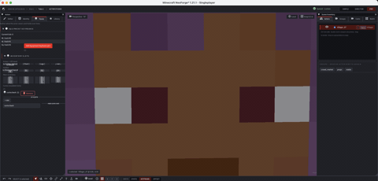

Wiki tecnica para creadores y desarrolladores de addons.
Actor Studio
Actores, puppets, identidad, equipamiento, pose, performance clips, animation library y crowd placement.
Free downloadAll Rights ReservedNeoForge 1.21.1

01
Que son los actores
Los actores son puppets controlables dentro del replay. Pueden representar players, mobs o NPCs y ayudan a reconstruir movimiento, roleplay, poses, acciones y shots que no salieron perfectos en la grabacion original.
Un actor puede insertarse como puppet nuevo o usarse como override de una entidad grabada.
02
Pestanas principales
| Pestana | Funcion |
|---|---|
| Editor | Seleccion, transforms, write mode static/keyframe y herramientas principales. |
| Identity | Nombre, tipo de entidad, skin, cape, color y Pehkui scale. |
| Equipment | Armor, offhand, hotbar, inventario, curios e item picker. |
| Library | Performance clips, libreria .franim y reutilizacion. |
03
Write mode
Static: escribe transform en la pose estatica del actor.Keyframe: escribe transform como keyframe en el tick actual.Offset: reservado para un target futuro; usa Static o Keyframe en la build actual.
04
Performance clips
- Selecciona un actor.
- Pulsa
Record Performance Clip. - Mueve la camara como controlador de movimiento.
- Deten la grabacion performance.
- Revisa la clip y aplicala al actor o guardala.
- Usa
To Librarypara crear un archivo.franimreutilizable.
05
Equipment e item picker
El item picker renderiza items desde assets reales del juego. Puedes buscar, filtrar namespace, usar categorias y Recent. Componentes complejos, enchantments y trims son futuros si no aparecen en el control actual.